    <!-- Galeri Karya & Proses Pengerjaan (3 Video & 19 Foto Berdampingan + Filter Kategori + Lookbook Lightbox) -->
    <section id="galeri" class="py-36 bg-neutral-900/30 border-t border-amber-900/30 px-8 backdrop-blur-xl">
        <div class="max-w-7xl mx-auto">
            <div class="text-center mb-12">
                <span class="text-amber-500 text-xs font-bold tracking-[0.3em] uppercase block mb-3">Lookbook & Dokumentasi</span>
                <h2 class="font-editorial text-6xl font-bold text-white mb-4 tracking-tight">Galeri Karya & Proses</h2>
                <div class="h-1 w-24 bg-amber-500 mx-auto rounded-full mb-6 shadow-lg shadow-amber-500/50"></div>
                <p class="text-neutral-400 text-lg font-light max-w-2xl mx-auto mb-8">Dokumentasi pilihan dari workshop kami di Kp. Cijambu, Selaawi, Garut—menampilkan konstruksi bambu, furnitur, anyaman, ukiran, dan penataan kawasan.</p>

                <!-- Tombol Filter Kategori -->
                <div class="flex flex-wrap justify-center gap-3">
                    <button type="button" data-filter="all" class="filter-btn active px-6 py-2.5 rounded-2xl bg-neutral-900 border border-amber-600/40 text-amber-300 text-sm transition cursor-pointer">Semua Karya (22)</button>
                    <button type="button" data-filter="video" class="filter-btn px-6 py-2.5 rounded-2xl bg-neutral-900 border border-amber-600/40 text-amber-300 text-sm hover:bg-neutral-800 transition cursor-pointer">Video Proses & Proyek (3)</button>
                    <button type="button" data-filter="bambu" class="filter-btn px-6 py-2.5 rounded-2xl bg-neutral-900 border border-amber-600/40 text-amber-300 text-sm hover:bg-neutral-800 transition cursor-pointer">Bambu, Furnitur & Kerajinan (13)</button>
                    <button type="button" data-filter="ukiran" class="filter-btn px-6 py-2.5 rounded-2xl bg-neutral-900 border border-amber-600/40 text-amber-300 text-sm hover:bg-neutral-800 transition cursor-pointer">Ukiran & Patung Artistik (9)</button>
                </div>
            </div>

            <div class="desktop-grid-4">
                <!-- Video 1 -->
                <div data-category="video ukiran" class="gallery-item architectural-card rounded-3xl overflow-hidden flex flex-col justify-between" data-lookbook-type="video" data-lookbook-src="VID-20261102-WA0074.mp4" data-lookbook-title="Pembentukan & Pemotongan Kayu" data-lookbook-desc="Tahap awal pembentukan & perapihan presisi di workshop">
                    <div class="relative">
                        <video controls preload="metadata" playsinline class="gallery-media bg-black">
                            <source src="VID-20261102-WA0074.mp4" type="video/mp4">
                            Browser Anda tidak mendukung pemutaran video.
                        </video>
                        <span class="absolute top-3 left-3 px-2.5 py-1 rounded-full bg-amber-500/90 text-neutral-950 text-[10px] font-extrabold tracking-wider uppercase shadow">Video Proses</span>
                    </div>
                    <div class="p-4">
                        <div class="flex items-start justify-between gap-2">
                            <div>
                                <p class="text-[10px] uppercase tracking-widest text-amber-500/85 font-bold">Presisi Workshop</p>
                                <p class="text-amber-300 font-semibold text-sm">Pembentukan & Pemotongan Kayu</p>
                                <p class="text-neutral-400 text-xs font-light mt-0.5">Tahap awal pembentukan karya ruang</p>
                            </div>
                            <button type="button" data-expand-lookbook class="shrink-0 px-2.5 py-1 rounded-xl bg-neutral-900 hover:bg-neutral-800 border border-amber-600/40 text-amber-300 text-[11px] font-semibold transition cursor-pointer">Lookbook</button>
                        </div>
                        <div data-video-fallback class="hidden text-amber-300/90 text-[11px] mt-1.5 space-y-1">
                            <p>Pastikan file <code class="text-amber-400">VID-20261102-WA0074.mp4</code> diunggah sejajar dengan <code class="text-amber-400">index.html</code>.</p>
                            <a href="VID-20261102-WA0074.mp4" target="_blank" rel="noopener noreferrer" class="inline-block underline text-amber-400">Buka file video langsung</a>
                        </div>
                    </div>
                </div>

                <!-- Video 2 -->
                <div data-category="video ukiran" class="gallery-item architectural-card rounded-3xl overflow-hidden flex flex-col justify-between" data-lookbook-type="video" data-lookbook-src="VID-20261102-WA0076.mp4" data-lookbook-title="Proses Detail Ukiran Artistik" data-lookbook-desc="Pengerjaan motif, lekukan & tekstur bernilai seni tinggi">
                    <div class="relative">
                        <video controls preload="metadata" playsinline class="gallery-media bg-black">
                            <source src="VID-20261102-WA0076.mp4" type="video/mp4">
                            Browser Anda tidak mendukung pemutaran video.
                        </video>
                        <span class="absolute top-3 left-3 px-2.5 py-1 rounded-full bg-amber-500/90 text-neutral-950 text-[10px] font-extrabold tracking-wider uppercase shadow">Video Proses</span>
                    </div>
                    <div class="p-4">
                        <div class="flex items-start justify-between gap-2">
                            <div>
                                <p class="text-[10px] uppercase tracking-widest text-amber-500/85 font-bold">Seni & Pahatan</p>
                                <p class="text-amber-300 font-semibold text-sm">Proses Detail Ukiran Artistik</p>
                                <p class="text-neutral-400 text-xs font-light mt-0.5">Pahatan motif & tekstur bernilai seni tinggi</p>
                            </div>
                            <button type="button" data-expand-lookbook class="shrink-0 px-2.5 py-1 rounded-xl bg-neutral-900 hover:bg-neutral-800 border border-amber-600/40 text-amber-300 text-[11px] font-semibold transition cursor-pointer">Lookbook</button>
                        </div>
                        <div data-video-fallback class="hidden text-amber-300/90 text-[11px] mt-1.5 space-y-1">
                            <p>Pastikan file <code class="text-amber-400">VID-20261102-WA0076.mp4</code> diunggah sejajar dengan <code class="text-amber-400">index.html</code>.</p>
                            <a href="VID-20261102-WA0076.mp4" target="_blank" rel="noopener noreferrer" class="inline-block underline text-amber-400">Buka file video langsung</a>
                        </div>
                    </div>
                </div>

                <!-- Video 3 -->
                <div data-category="video ukiran" class="gallery-item architectural-card rounded-3xl overflow-hidden flex flex-col justify-between" data-lookbook-type="video" data-lookbook-src="VID-20260726-WA0053.mp4" data-lookbook-title="Landscape, Kolam & Patung Satwa" data-lookbook-desc="Penataan elemen air, batu artifisial & focal point kawasan">
                    <div class="relative">
                        <video controls preload="metadata" playsinline class="gallery-media bg-black">
                            <source src="VID-20260726-WA0053.mp4" type="video/mp4">
                            Browser Anda tidak mendukung pemutaran video.
                        </video>
                        <span class="absolute top-3 left-3 px-2.5 py-1 rounded-full bg-amber-500/90 text-neutral-950 text-[10px] font-extrabold tracking-wider uppercase shadow">Video Proyek</span>
                    </div>
                    <div class="p-4">
                        <div class="flex items-start justify-between gap-2">
                            <div>
                                <p class="text-[10px] uppercase tracking-widest text-amber-500/85 font-bold">Landscape Kawasan</p>
                                <p class="text-amber-300 font-semibold text-sm">Landscape, Kolam & Patung Satwa</p>
                                <p class="text-neutral-400 text-xs font-light mt-0.5">Penataan elemen air & focal point kawasan</p>
                            </div>
                            <button type="button" data-expand-lookbook class="shrink-0 px-2.5 py-1 rounded-xl bg-neutral-900 hover:bg-neutral-800 border border-amber-600/40 text-amber-300 text-[11px] font-semibold transition cursor-pointer">Lookbook</button>
                        </div>
                        <div data-video-fallback class="hidden text-amber-300/90 text-[11px] mt-1.5 space-y-1">
                            <p>Pastikan file <code class="text-amber-400">VID-20260726-WA0053.mp4</code> diunggah sejajar dengan <code class="text-amber-400">index.html</code>.</p>
                            <a href="VID-20260726-WA0053.mp4" target="_blank" rel="noopener noreferrer" class="inline-block underline text-amber-400">Buka file video langsung</a>
                        </div>
                    </div>
                </div>

                <!-- Foto 1 -->
                <figure data-category="bambu" class="gallery-item architectural-card rounded-3xl overflow-hidden group cursor-pointer flex flex-col justify-between" data-lookbook-type="image" data-lookbook-src="IMG-20261117-WA0002.jpg" data-lookbook-title="Karya Anyaman Bambu Motif Bunga & Daun" data-lookbook-desc="Aksen dinding hangat untuk ruang tamu, café & area komersial">
                    
                    <figcaption class="p-4">
                        <p class="text-[10px] uppercase tracking-widest text-amber-500/85 font-bold">Anyaman & Interior</p>
                        <p class="text-amber-300 font-semibold text-sm">Anyaman Bambu Artistik</p>
                        <p class="text-neutral-400 text-xs font-light mt-0.5">Aksen dinding hangat untuk ruang & café</p>
                    </figcaption>
                </figure>

                <!-- Foto 2 -->
                <figure data-category="ukiran" class="gallery-item architectural-card rounded-3xl overflow-hidden group cursor-pointer flex flex-col justify-between" data-lookbook-type="image" data-lookbook-src="IMG-20261102-WA0057.jpg" data-lookbook-title="Karya Ukiran Kayu & Akar Artistik" data-lookbook-desc="Karya berkarakter alami untuk lobi, resort & ruang koleksi">
                    
                    <figcaption class="p-4">
                        <p class="text-[10px] uppercase tracking-widest text-amber-500/85 font-bold">Seni Ukir</p>
                        <p class="text-amber-300 font-semibold text-sm">Ukiran Kayu & Akar</p>
                        <p class="text-neutral-400 text-xs font-light mt-0.5">Karya berkarakter alami untuk lobi & ruang</p>
                    </figcaption>
                </figure>

                <!-- Foto 3 -->
                <figure data-category="bambu" class="gallery-item architectural-card rounded-3xl overflow-hidden group cursor-pointer flex flex-col justify-between" data-lookbook-type="image" data-lookbook-src="IMG-20260726-WA0017.jpg" data-lookbook-title="Patung Figur Anyaman & Serat Bambu" data-lookbook-desc="Elemen budaya & daya tarik visual berbusana tradisional">
                    
                    <figcaption class="p-4">
                        <p class="text-[10px] uppercase tracking-widest text-amber-500/85 font-bold">Karya Figuratif</p>
                        <p class="text-amber-300 font-semibold text-sm">Patung Figur Bambu</p>
                        <p class="text-neutral-400 text-xs font-light mt-0.5">Elemen budaya & daya tarik visual ruang</p>
                    </figcaption>
                </figure>

                <!-- Foto 4 -->
                <figure data-category="ukiran" class="gallery-item architectural-card rounded-3xl overflow-hidden group cursor-pointer flex flex-col justify-between" data-lookbook-type="image" data-lookbook-src="IMG-20260726-WA0022.jpg" data-lookbook-title="Patung Ukiran Elang & Elemen Artistik" data-lookbook-desc="Pahatan berwibawa untuk area tamu, pintu masuk & taman">
                    
                    <figcaption class="p-4">
                        <p class="text-[10px] uppercase tracking-widest text-amber-500/85 font-bold">Patung & Focal Point</p>
                        <p class="text-amber-300 font-semibold text-sm">Ukiran Figur Satwa</p>
                        <p class="text-neutral-400 text-xs font-light mt-0.5">Pahatan berwibawa untuk area tamu & taman</p>
                    </figcaption>
                </figure>

                <!-- Foto 5 -->
                <figure data-category="ukiran" class="gallery-item architectural-card rounded-3xl overflow-hidden group cursor-pointer flex flex-col justify-between" data-lookbook-type="image" data-lookbook-src="IMG-20260726-WA0036.jpg" data-lookbook-title="Ukiran Relief & Pilar Motif Naga" data-lookbook-desc="Karya monumental berskala besar penuh ketelitian detail">
                    
                    <figcaption class="p-4">
                        <p class="text-[10px] uppercase tracking-widest text-amber-500/85 font-bold">Karya Monumental</p>
                        <p class="text-amber-300 font-semibold text-sm">Ukiran Motif Naga</p>
                        <p class="text-neutral-400 text-xs font-light mt-0.5">Karya monumental penuh ketelitian detail</p>
                    </figcaption>
                </figure>

                <!-- Foto 6 -->
                <figure data-category="bambu" class="gallery-item architectural-card rounded-3xl overflow-hidden group cursor-pointer flex flex-col justify-between" data-lookbook-type="image" data-lookbook-src="IMG-20260726-WA0021.jpg" data-lookbook-title="Konstruksi Dinding, Anyaman & Furnitur Bambu" data-lookbook-desc="Perpaduan struktur dinding, anyaman & set furnitur ruang">
                    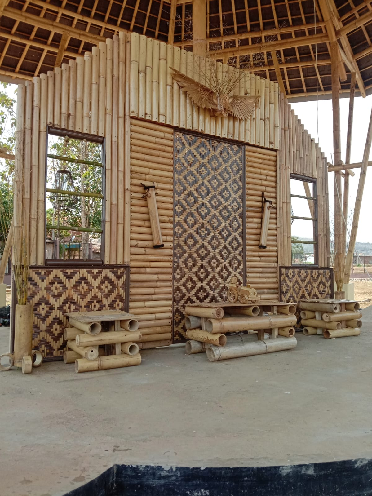
                    <figcaption class="p-4">
                        <p class="text-[10px] uppercase tracking-widest text-amber-500/85 font-bold">Struktur & Furnitur</p>
                        <p class="text-amber-300 font-semibold text-sm">Fasad & Furnitur Bambu</p>
                        <p class="text-neutral-400 text-xs font-light mt-0.5">Perpaduan struktur, anyaman & set furnitur</p>
                    </figcaption>
                </figure>

                <!-- Foto 7 -->
                <figure data-category="bambu" class="gallery-item architectural-card rounded-3xl overflow-hidden group cursor-pointer flex flex-col justify-between" data-lookbook-type="image" data-lookbook-src="IMG-20260726-WA0037.jpg" data-lookbook-title="Bangunan Arsitektural Berstruktur Bambu (Sudut Luas)" data-lookbook-desc="Konstruksi atap & rangka luas untuk resort, villa & wisata">
                    
                    <figcaption class="p-4">
                        <p class="text-[10px] uppercase tracking-widest text-amber-500/85 font-bold">Konstruksi Bambu</p>
                        <p class="text-amber-300 font-semibold text-sm">Bangunan Tematik Bambu</p>
                        <p class="text-neutral-400 text-xs font-light mt-0.5">Konstruksi luas untuk resort, villa & wisata</p>
                    </figcaption>
                </figure>

                <!-- Foto 8 -->
                <figure data-category="bambu" class="gallery-item architectural-card rounded-3xl overflow-hidden group cursor-pointer flex flex-col justify-between" data-lookbook-type="image" data-lookbook-src="IMG-20260726-WA0034.jpg" data-lookbook-title="Gerbang & Elemen Interior Bambu" data-lookbook-desc="Sambutan visual yang kuat pada akses masuk & bukaan ruang">
                    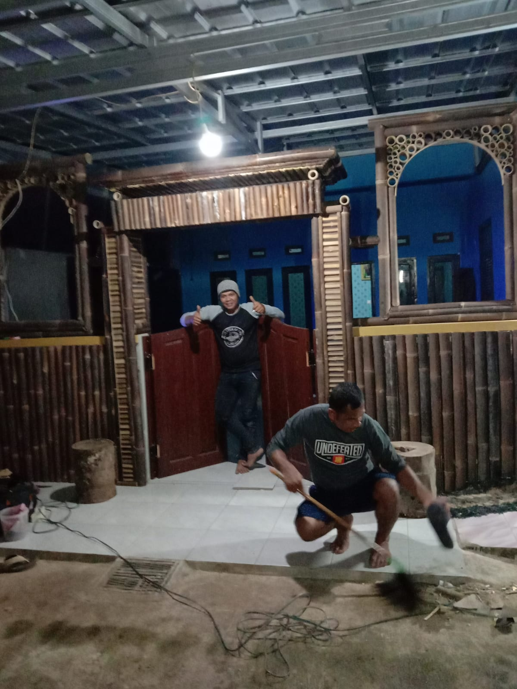
                    <figcaption class="p-4">
                        <p class="text-[10px] uppercase tracking-widest text-amber-500/85 font-bold">Akses & Ruang</p>
                        <p class="text-amber-300 font-semibold text-sm">Gerbang & Bingkai Bambu</p>
                        <p class="text-neutral-400 text-xs font-light mt-0.5">Sambutan visual yang kuat pada akses masuk</p>
                    </figcaption>
                </figure>

                <!-- Foto 9 -->
                <figure data-category="bambu" class="gallery-item architectural-card rounded-3xl overflow-hidden group cursor-pointer flex flex-col justify-between" data-lookbook-type="image" data-lookbook-src="images.jpeg" data-lookbook-title="Ruang Bambu, Partisi Kisi & Furnitur Bambu" data-lookbook-desc="Partisi kisi diagonal, meja & kursi nyaman berkarakter">
                    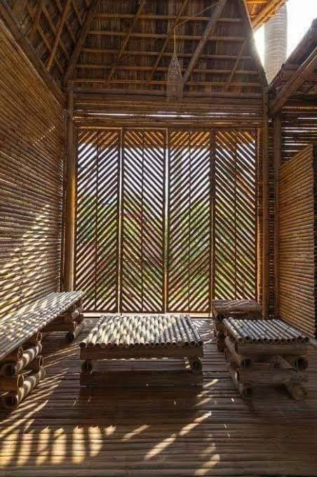
                    <figcaption class="p-4">
                        <p class="text-[10px] uppercase tracking-widest text-amber-500/85 font-bold">Furnitur & Partisi</p>
                        <p class="text-amber-300 font-semibold text-sm">Ruang & Furnitur Bambu</p>
                        <p class="text-neutral-400 text-xs font-light mt-0.5">Partisi kisi, meja & kursi nyaman berkarakter</p>
                    </figcaption>
                </figure>

                <!-- Foto 10 -->
                <figure data-category="bambu" class="gallery-item architectural-card rounded-3xl overflow-hidden group cursor-pointer flex flex-col justify-between" data-lookbook-type="image" data-lookbook-src="IMG-20260726-WA0031.jpg" data-lookbook-title="Produk Kerajinan Sangkar Hasil Workshop" data-lookbook-desc="Hasil produk kerajinan rangka & anyaman siap pakai maupun custom">
                    
                    <figcaption class="p-4">
                        <p class="text-[10px] uppercase tracking-widest text-amber-500/85 font-bold">Produk Kerajinan</p>
                        <p class="text-amber-300 font-semibold text-sm">Kerajinan Sangkar</p>
                        <p class="text-neutral-400 text-xs font-light mt-0.5">Produk kerajinan rapi siap pakai & custom</p>
                    </figcaption>
                </figure>

                <!-- Foto 11 -->
                <figure data-category="bambu" class="gallery-item architectural-card rounded-3xl overflow-hidden group cursor-pointer flex flex-col justify-between" data-lookbook-type="image" data-lookbook-src="IMG-20261102-WA0039.jpg" data-lookbook-title="Struktur Saung Bambu & Lampu Dekoratif" data-lookbook-desc="Suasana hangat dengan konstruksi bambu dan pencahayaan artistik">
                    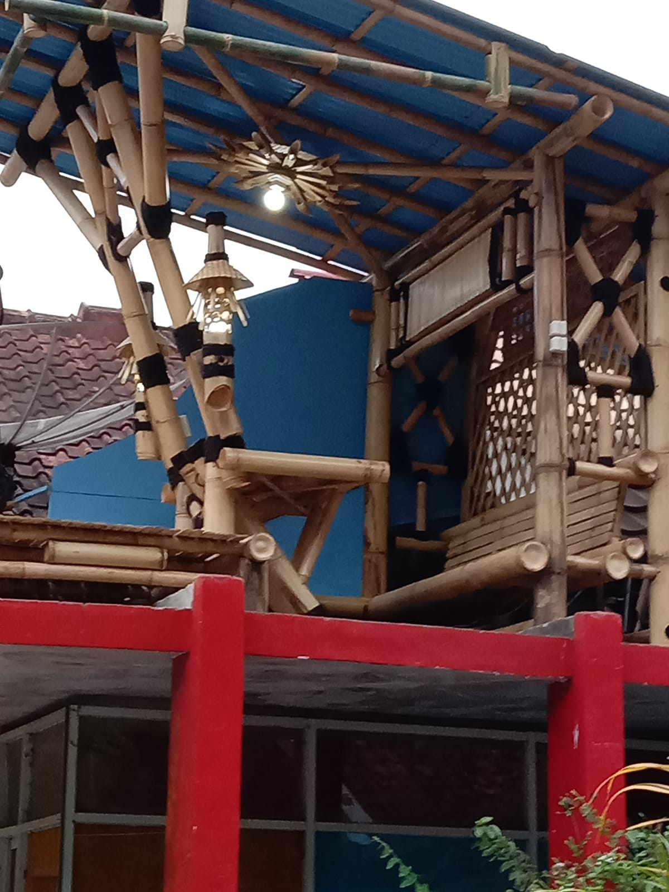
                    <figcaption class="p-4">
                        <p class="text-[10px] uppercase tracking-widest text-amber-500/85 font-bold">Suasana & Cahaya</p>
                        <p class="text-amber-300 font-semibold text-sm">Struktur Bambu & Lampu</p>
                        <p class="text-neutral-400 text-xs font-light mt-0.5">Suasana hangat dengan pencahayaan artistik</p>
                    </figcaption>
                </figure>

                <!-- Foto 12 -->
                <figure data-category="ukiran" class="gallery-item architectural-card rounded-3xl overflow-hidden group cursor-pointer flex flex-col justify-between" data-lookbook-type="image" data-lookbook-src="IMG-20261102-WA0045.jpg" data-lookbook-title="Patung Ukiran Figur Tradisional di Workshop" data-lookbook-desc="Karya figuratif bernuansa budaya Nusantara di bengkel seni">
                    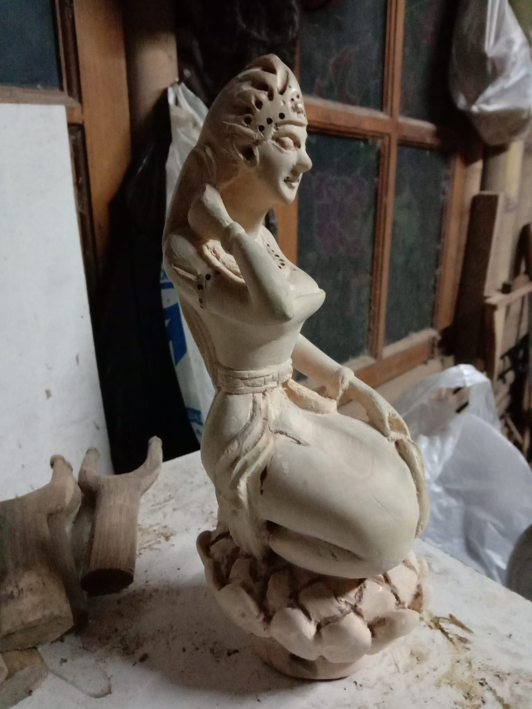
                    <figcaption class="p-4">
                        <p class="text-[10px] uppercase tracking-widest text-amber-500/85 font-bold">Seni Figuratif</p>
                        <p class="text-amber-300 font-semibold text-sm">Patung Ukiran Figur</p>
                        <p class="text-neutral-400 text-xs font-light mt-0.5">Karya figuratif bernuansa budaya Nusantara</p>
                    </figcaption>
                </figure>

                <!-- Foto 13 -->
                <figure data-category="bambu" class="gallery-item architectural-card rounded-3xl overflow-hidden group cursor-pointer flex flex-col justify-between" data-lookbook-type="image" data-lookbook-src="IMG-20261102-WA0035.jpg" data-lookbook-title="Spot Foto & Konstruksi Bambu Berlatar Pegunungan" data-lookbook-desc="Instalasi bambu & area pandang yang menambah daya tarik wisata">
                    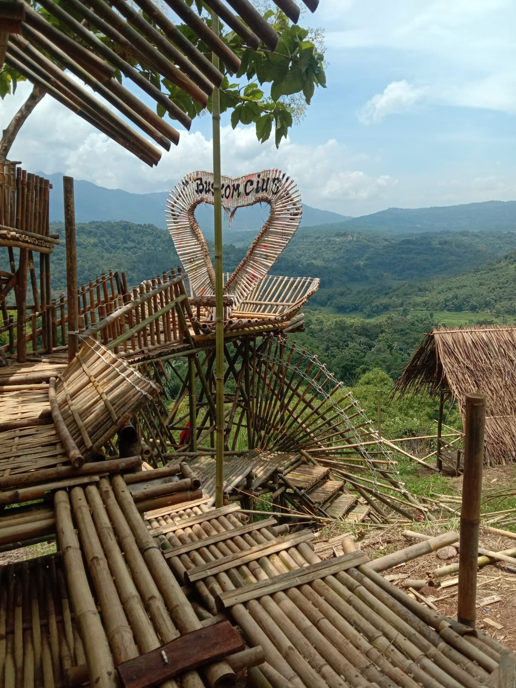
                    <figcaption class="p-4">
                        <p class="text-[10px] uppercase tracking-widest text-amber-500/85 font-bold">Destinasi & Wisata</p>
                        <p class="text-amber-300 font-semibold text-sm">Spot Wisata & Struktur Bambu</p>
                        <p class="text-neutral-400 text-xs font-light mt-0.5">Menambah daya tarik foto & kunjungan wisata</p>
                    </figcaption>
                </figure>

                <!-- Foto 14 -->
                <figure data-category="bambu" class="gallery-item architectural-card rounded-3xl overflow-hidden group cursor-pointer flex flex-col justify-between" data-lookbook-type="image" data-lookbook-src="IMG-20261102-WA0031.jpg" data-lookbook-title="Proses Pengerjaan Kerajinan Bambu di Workshop" data-lookbook-desc="Pembentukan bilah & detail langsung oleh pengrajin berpengalaman">
                    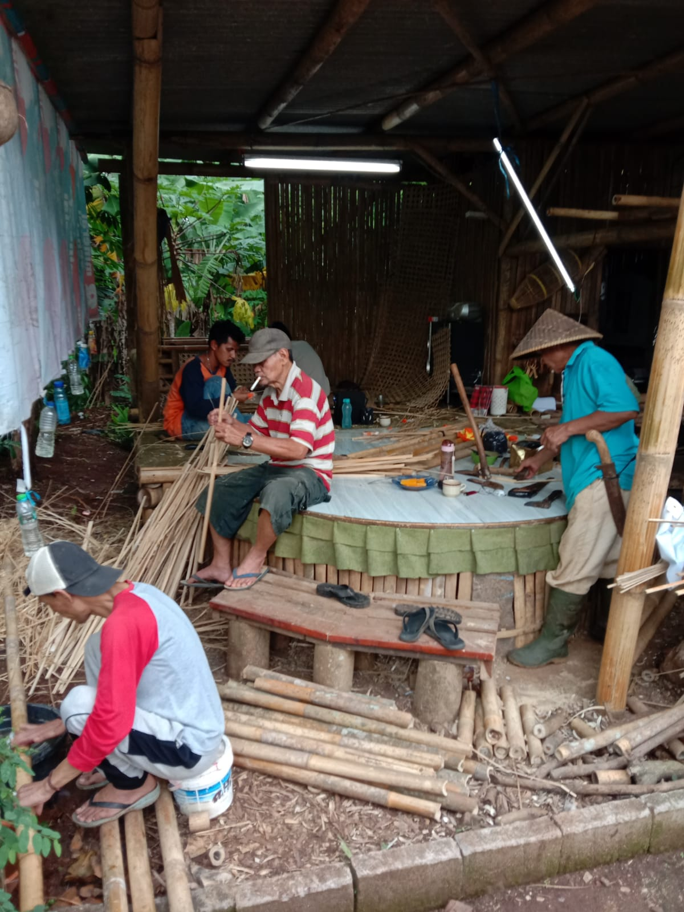
                    <figcaption class="p-4">
                        <p class="text-[10px] uppercase tracking-widest text-amber-500/85 font-bold">Keahlian Tangan</p>
                        <p class="text-amber-300 font-semibold text-sm">Aktivitas Pengrajin Workshop</p>
                        <p class="text-neutral-400 text-xs font-light mt-0.5">Pengerjaan langsung oleh tim berpengalaman</p>
                    </figcaption>
                </figure>

                <!-- Foto 15 -->
                <figure data-category="bambu" class="gallery-item architectural-card rounded-3xl overflow-hidden group cursor-pointer flex flex-col justify-between" data-lookbook-type="image" data-lookbook-src="IMG-20261102-WA0037.jpg" data-lookbook-title="Anyaman Rangka Bambu Motif Geometris (Detail Kisi)" data-lookbook-desc="Detail anyaman bambu berpola geometris untuk partisi & panel">
                    
                    <figcaption class="p-4">
                        <p class="text-[10px] uppercase tracking-widest text-amber-500/85 font-bold">Detail Anyaman</p>
                        <p class="text-amber-300 font-semibold text-sm">Anyaman Kisi Bambu</p>
                        <p class="text-neutral-400 text-xs font-light mt-0.5">Detail partisi & panel berpola geometris</p>
                    </figcaption>
                </figure>

                <!-- Foto 16 (Baru: Sangkar Murai) -->
                <figure data-category="bambu" class="gallery-item architectural-card rounded-3xl overflow-hidden group cursor-pointer flex flex-col justify-between" data-lookbook-type="image" data-lookbook-src="sangkarmurai.jpg" data-lookbook-title="Sangkar Murai Bambu Presisi (Pre-Order / Custom)" data-lookbook-desc="Kerajinan sangkar murai berbahan bambu rapi dengan pengerjaan detail">
                    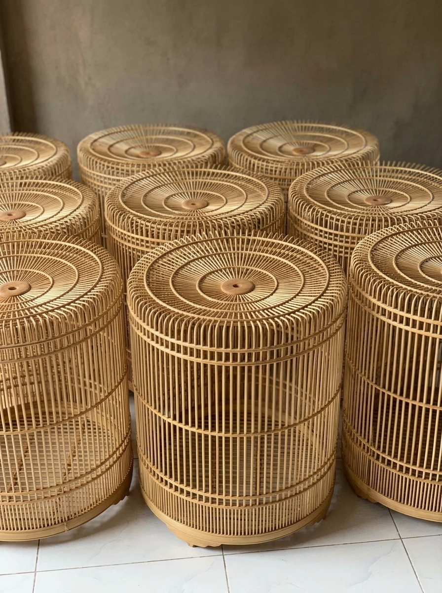
                    <figcaption class="p-4">
                        <p class="text-[10px] uppercase tracking-widest text-amber-500/85 font-bold">Kerajinan Bambu • Pre-Order</p>
                        <p class="text-amber-300 font-semibold text-sm">Sangkar Murai Bambu</p>
                        <p class="text-neutral-400 text-xs font-light mt-0.5">Pengerjaan presisi & siap pesan custom</p>
                    </figcaption>
                </figure>

                <!-- Foto 17 (Baru: Patung Figuratif Anyaman Bambu) -->
                <figure data-category="bambu" class="gallery-item architectural-card rounded-3xl overflow-hidden group cursor-pointer flex flex-col justify-between" data-lookbook-type="image" data-lookbook-src="1795569417498.jpg" data-lookbook-title="Patung Figuratif Anyaman Bambu (Pre-Order / Custom)" data-lookbook-desc="Patung figuratif berbahan anyaman bambu dengan dudukan pedestal untuk ruang & lobi">
                    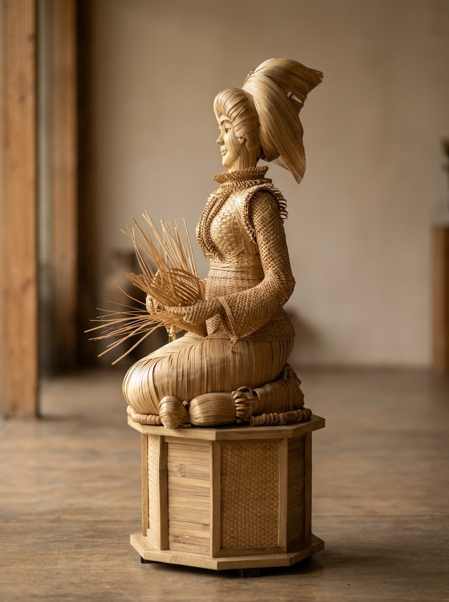
                    <figcaption class="p-4">
                        <p class="text-[10px] uppercase tracking-widest text-amber-500/85 font-bold">Seni Anyaman • Pre-Order</p>
                        <p class="text-amber-300 font-semibold text-sm">Patung Figuratif Bambu</p>
                        <p class="text-neutral-400 text-xs font-light mt-0.5">Karya dekoratif berkarakter untuk ruang & lobi</p>
                    </figcaption>
                </figure>

                <!-- Foto 18 (Baru: Patung Ukiran Elang) -->
                <figure data-category="ukiran" class="gallery-item architectural-card rounded-3xl overflow-hidden group cursor-pointer flex flex-col justify-between" data-lookbook-type="image" data-lookbook-src="1795569439190.jpg" data-lookbook-title="Patung Ukiran Elang Artistik (Pre-Order / Custom)" data-lookbook-desc="Patung ukiran elang dengan siluet sayap menjulang & detail pahatan tangan">
                    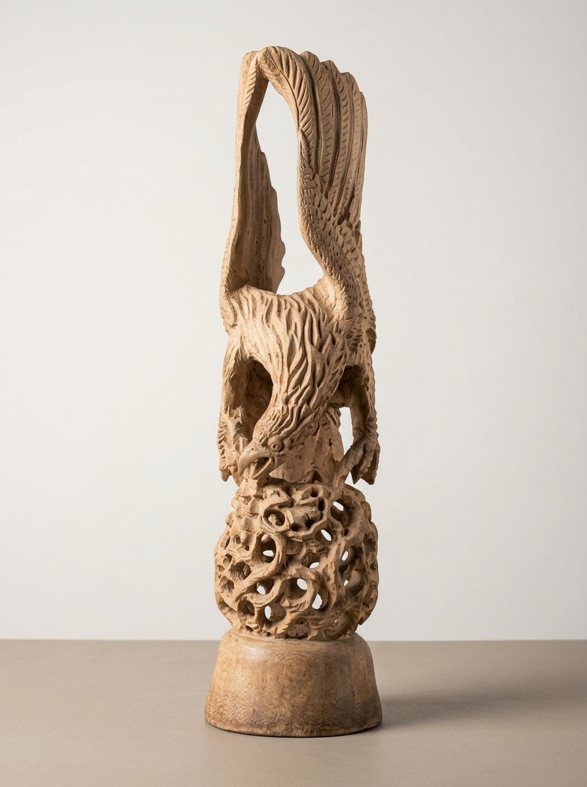
                    <figcaption class="p-4">
                        <p class="text-[10px] uppercase tracking-widest text-amber-500/85 font-bold">Seni Ukir • Pre-Order</p>
                        <p class="text-amber-300 font-semibold text-sm">Patung Ukiran Elang</p>
                        <p class="text-neutral-400 text-xs font-light mt-0.5">Pahatan artistik untuk ruang & koleksi</p>
                    </figcaption>
                </figure>

                <!-- Foto 19 (Baru: Gazebo Bambu Bertingkat) -->
                <figure data-category="bambu" class="gallery-item architectural-card rounded-3xl overflow-hidden group cursor-pointer flex flex-col justify-between" data-lookbook-type="image" data-lookbook-src="1795569432234.jpg" data-lookbook-title="Gazebo & Struktur Bambu Bertingkat (Pre-Order / Custom)" data-lookbook-desc="Konstruksi gazebo bambu dua tingkat dengan pagar kisi, atap bilik & ikatan ijuk">
                    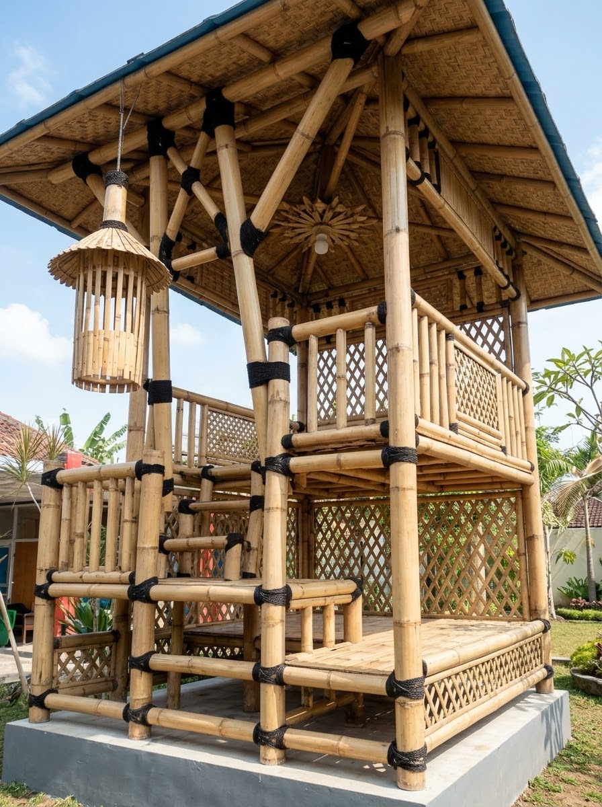
                    <figcaption class="p-4">
                        <p class="text-[10px] uppercase tracking-widest text-amber-500/85 font-bold">Konstruksi Bambu • Pre-Order</p>
                        <p class="text-amber-300 font-semibold text-sm">Gazebo Bambu Bertingkat</p>
                        <p class="text-neutral-400 text-xs font-light mt-0.5">Struktur dua tingkat untuk taman & kawasan</p>
                    </figcaption>
                </figure>
            </div>

            <div id="emptyGalleryMsg" class="hidden architectural-card rounded-3xl p-10 text-center mt-8">
                <p class="text-amber-300 font-semibold text-base">Belum ada karya yang tampil pada kategori ini.</p>
            </div>
        </div>
    </section>
